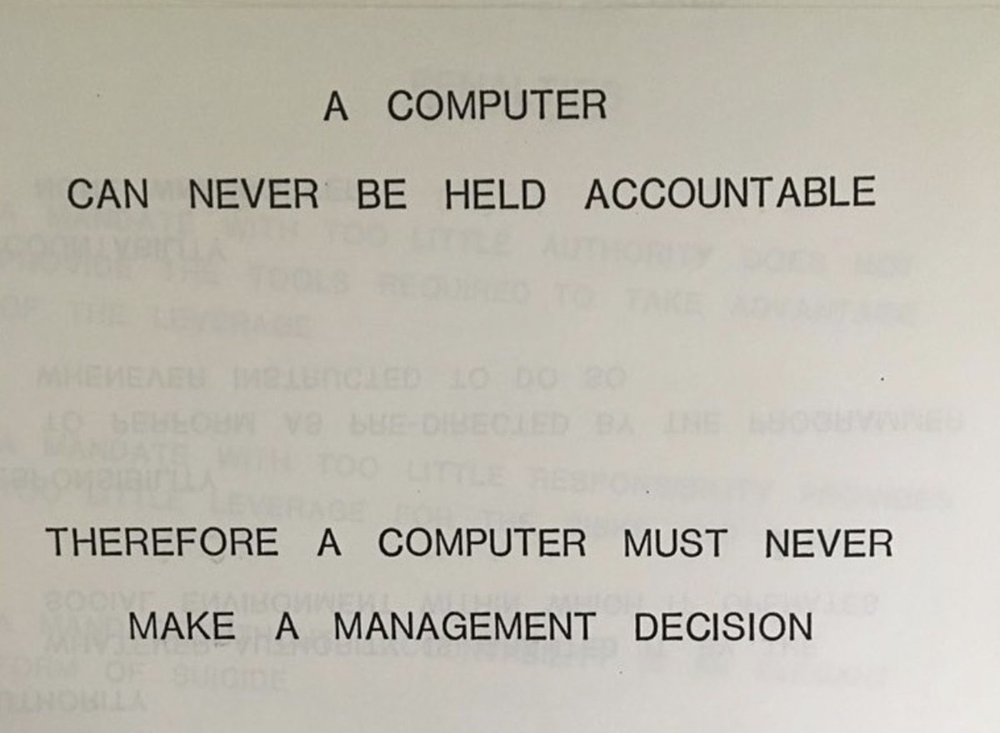

Most people are still thinking about AI like it's 2023. They're writing better prompts, asking chatbots to draft emails, wondering how their peers are squeezing out productivity gains. Meanwhile, the tools have changed underneath them. This is what I've learned from using AI every day for three years, building with it professionally, and training teams to figure it out for themselves.
What good AI use looked like in 2023
In 2023, you gave AI a task. Write this email. Summarize this document. Follow this protocol. The tool replicated your instructions, sometimes well, sometimes not. The skill was prompt engineering — learning how to ask clearly so the machine could follow your lead.
That was useful. It saved time on repetitive work, lowered the bar for getting started, helped people draft and brainstorm faster. But it was fundamentally a tool following orders. You were still the one doing the thinking.
The shift
The biggest change in 2026 isn't smarter models. It's what the models are doing.
Agentic AI doesn't wait for a protocol. You hand it a goal and some context, and it builds its own solution. Ethan Mollick calls this "working with wizards" — you present a problem, and something comes back that you didn't fully specify. If you set high expectations and actually interrogate the proposed plan, you find that the AI isn't replicating your skills. It's employing skills beyond your expertise to solve your problem.
My technical skills are still catching up to my questions. But pairing what I know with an AI that knows what I don't has led to powerful automations (and some colossal mistakes).
Here's the shift in one line: the 2023 skill was instructing a tool. The 2026 skill is judging a collaborator. And judging a collaborator is a different kind of work.
Judgment is the new skill
Judgment isn't trust. Trust is something you hand over and stop thinking about. Judgment is a dance — constantly reading where the model's confidence exceeds its competence, where your gut is sharper than the output, where the two of you together land somewhere neither would alone.
The dangers of skipping this step are real and well-documented. Security vulnerabilities in vibe-coded software. Probabilistic models used in place of clinical judgment on data whose provenance nobody's checked. Automated workflows running processes that matter, maintained by nobody on the team who fully understands them. People are fitting LLMs into everything when LLMs are actually only good at certain things.
What makes this harder: the act of using these tools can erode the very capacity you need to supervise them. Recent research is converging on this — Gerlich (2025, Societies) found heavy AI reliance correlates with measurable declines in critical-thinking engagement, and a Microsoft/Carnegie Mellon study the same year found that users who trust AI outputs most invest the least metacognitive effort in evaluating them. The pattern is intuitive once you see it. If you offload the reasoning, you stop practicing the reasoning. And if you stop practicing the reasoning, you lose the ability to catch the AI when it's wrong.
Which means the two things most people haven't figured out are actually one thing:
You can't know what to trust an AI with unless you stay in the loop.
If you accept outputs and move on, you don't build the judgment to spot when the next output is wrong. You become a spectator in your own work, and in a field that changes this fast, spectators fall behind quickly.
This is why I'm stubborn about building learning into the process. A colleague of mine, when reading about dry subjects, asks AI to explain them in the diction of RuPaul's Drag Race. I ask AI to write HTML reports with visual metaphors and Mermaid diagrams explaining whatever technology it's using, so I'm teaching myself while it builds. The method doesn't matter. The principle does: you have to actively design your learning into the work, or the wizard runs the show and you become a spectator in your own work.
Two behaviors

There's an IBM training slide from 1979 that reads: "A computer can never be held accountable. Therefore a computer must never make a management decision."
That was true in 1979 and it's true in 2026. We can't make machines responsible for the decisions they help us make — we have to be responsible, to each other and to the people our work affects.
In practice, that comes down to two behaviors:
Verify. Read the code. Check the sources. Run the numbers yourself on something you already know the answer to. Treat every impressive output as a hypothesis, not a conclusion.
Stay curious. Ask the wizard to show its work. Make it teach you while it helps you. Assume that if you stop learning for six months, the tools will have moved somewhere you can no longer follow.
This isn't about fear, and it isn't about hype. It's about building a shared language so you and your team can navigate what these tools actually are in 2026, not what they were two years ago. If your team is still operating on 2023 assumptions, we should talk.